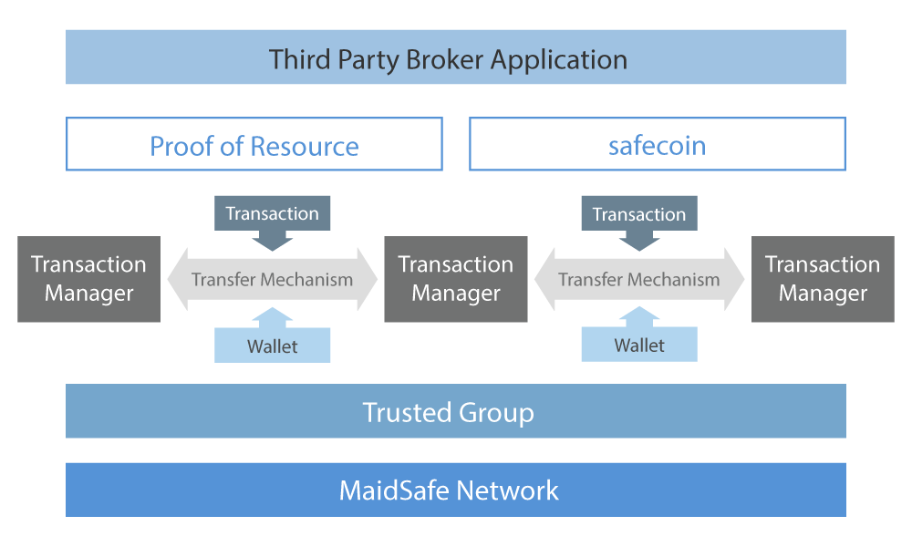

Safecoin
Safecoin is the currency of the SAFE network and a mechanism to incentivise and reward end users and developers as well as provide access to network services. End users who provide their unused computing resources to the network, called Farmers are rewarded in safecoin, while application developers, called Builders earn safecoin in proportion to how often their applications are used. Developers who improve the core SAFE network code base can also earn safecoin by providing bug fixes and new features. In the case of farmers and builders, safecoins are generated and distributed entirely by the network, without any human involvement. Core developers are rewarded by polling the developer mailing list.
Safecoin can only reside within the SAFE network and will be stored in a users wallet and used in exchange for network services; such as increased storage space and access to network applications. There is no set distribution time for safecoins. Unlike many currencies, the distribution of safecoin is backed by information and the amount of coins generated by the SAFE network is directly related to the amount of resource provided to it.
The following table attempts to predict coin distribution based on a number of assumptions, such as; number of nodes, amount of data per node and number of storage attempts.
| Year | Number of Nodes | Average Data (GB) Per Node | Accumulated Attempts | Attempts Percentage | Coin Distributed |
| 1 | 10000 | 16 | 88740000 | 2.07% | 2.00% |
| 2 | 50000 | 32 | 955700000 | 22.25% | 20.00% |
| 5 | 100000 | 64 | 4096000000 | 95.37% | 70.00% |
| 10 | 200000 | 128 | 17476200000 | 406.90% | 98.00% |
| 20 | 500000 | 256 | 92842500000 | 2161.66% | 99.99% |
Given significant demand the SAFE network would receive significant resource and subsequently generate a large number of coins. If demand were to slow, less resource would be provided and coin distribution would slow. This logic ensures no over supply, curbing inflation and retaining the currency value for all holders of safecoin.
Safecoin has a predictable cap of 4.3 billion coins and at present, only 10% have been released via an intermediary coin, MaidSafeCoin, during a crowd sale that took place at the end of April. Safecoins are managed by the network’s Transaction Manager. This is the SAFE equivalent to the block chain, however, in SAFE’s case it is unchained, keeping record of only the existing and previous owner. In this respect, safecoin should be thought of as digital cash.
